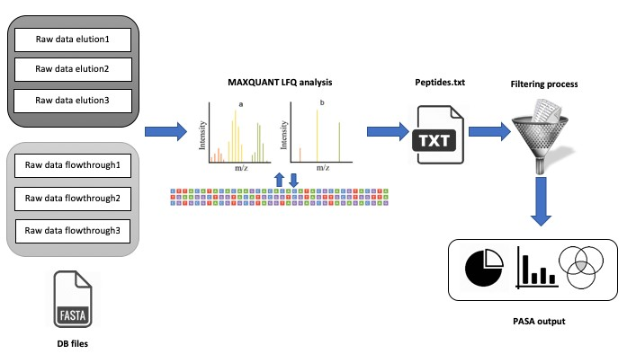

Introduction
Shotgun high-resolution proteomics antibodies is necessary for understanding the
dynamics and composition of polyclonal antibodies circulating in
serum [
1]. At steady
state circulating antibodies are produced by terminally differentiated B cells but after
exposure to antigen the humoral response generates a diverse antibody repertoire
due to SHM and V(D)J recombination [
2,
3] . For that reason, it is important to unveil
whether the Igs encoded by the peripheral blood B cells correspond to antibodies
present in circulation. Moreover, addressing questions as what are the relative
concentrations of serum antigen-specific monoclonal antibodies (within the
polyclonal pool), what are their repertoire features (e.g. V(D)J family usage, CDR3
length etc.) is important in order to shed light on mechanisms related to the
development of the immune response.
What is PASA?
PASA web server is user-friendly, free and open to all users and there is no login
requirement. PASA allows generating quantitative molecular measurements related
to serum antibody repertoire from high-resolution proteomic data. The PASA
web server is applicable for researchers at all levels that are interested in addressing
basic questions related to B cell development and differentiation, as well as an
application focused tool for vaccine development, immunodiagnostic discovery and
monoclonal antibody engineering.
Input
The web server accepts proteomics spectral files in raw format, up to 3 technical
replicates to each fraction elution/flow through. For the integration with data derived
from NGS of antibody encoding B cells the user is requested to upload V gene
sequence database at the amino acid level in Fasta format. This database can be
generated from our recently published ASAP web server [
4] that facilitates the analysis of
sequences derived from NGS (see
http://asap.tau.ac.il for more details).

Output and methodology
By far the highest diversity in antibodies occurs within the CDRH3 region
[
5] , which is
overwhelmingly responsible for antigen recognition. The CDRH3 is thus considered
as a unique identifier of antibody clones and hence is the focus of our analysis. Our
methodology is divided into two parts. The first part utilizes the MaxQuant
[
6 ,
7] a proteomic search algorithm that is used by
PASA to identify the sequences of peptides derived from serum
antibodies. PASA accepts up to three technical replicates of
proteomic spectral files from LC-MS/MS of antibodies that were
enriched by affinity chromatography against a given antigen
(elution) and up to three replicates of proteomic spectral files from
LC-MS/MS of antibodies that were depleted from the antigen
specific antibodies (flow through). The output from the first step is a
list of high confidence peptide sequences that are mapped to one of
the antibody sequences in the NGS database.
The output of this step is summarized in a file named:
1. list_of_curated_peptides.txt (accessed via the link in the results
section with the same name of the file name) and lists the identified
peptide sequences that map to one of the antibody V genes in the
uploaded database. The header of the columns in this file includes
the following:
Peptide_name - the identified peptide sequence that was mapped to an antibody sequence in the uploaded database. Only peptides that received high score by MaxQuant are included in this list.
Average_Intensity_elution - the average intensity of peptides from all replicates in the elution. Peptides identified in the elution fraction are marked as peptides derived from antibodies that are antigen-specific.
Average_enrichment_elution - the average enrichment in the elution represents the relative abundance of the peptide in all elution replicates.
Average_Intensity_flowthrough - the average intensity of peptides from all replicates in the flowthrough fruction. Peptides identified in the flowthrough fraction are marked as peptides derived from antibodies that are not antigen-specific.
Average_enrichment_flowthrough - the average enrichment in the elution represents the relative abundance of the peptide in all flowthrough replicates.
In the second part, the identified peptides are filtered to be mapped to antibodies and are stratified as follows:
2. informative_CDR3_peptides - peptides that map uniquely to a specific antibody colonotype and are derived from the CDR3 region of the antibody. These peptides are used to provide the final list of identified antibodies.
3. informative_non_CDR3_peptides - peptides that map uniquely to a specific clonotype but to a region in the antibody variable region but not to CDR3 region.
4. Non_informative_peptides - peptides that are promiscuous thus, do not map to a unique antibody clonotype and cannot be used to identify a specific antibody.
Each group of peptides are listed in a Tab Separated Values (.tsv) file and can be accessed through the links with matching names (i.e. list of informative CDR3 peptides, list of informative NON CDR3 peptides and list of NON informative peptides).
Both informative peptide files include the columns as follows:
Peptide_Seqeunce - the sequence of the identified peptide
Db_sequence - the list of full antibody variable region sequence that were mapped by the peptide
Sequence_header - the header of the variable region sequence as appears in the uploaded database
CDR3 - the CDR3 sequence of the identified antibody clonotype
V_family - the V family of the identified variable region of the antibody
D_family - the D family of the identified variable region of the antibody. In case the identification is of a variable region of a light chain, this field will hold the NA value.
J_family - the J family of the identified variable region of the antibody
Chain_type - the antibody variable region chain type (i.e. IGH, IGL, IGK)
NON informative peptide file includes a list of identified peptides without additional information as they do not contribute to the identification of non-promiscuous antibodies.
5. CDR3 IGH length distribution - present a histogram of the distribution of CDR3 length from antibody heavy chains as identified by proteomic informative CDR3 peptides (see example in gallery).
6. CDR3 IGL length distribution - present a histogram of the distribution of CDR3 length from antibody light chains as identified by proteomic informative CDR3 peptides (see example in gallery).
7. The 10 links following the above result links include the distribution of V(D)J family usage and the combinations (e.g. VD, VJ) of the antibody variable regions that were identified by proteomic informative CDR3 peptides.
8. Isotype distribution - a pie chart showing the distribution of the antibodies that were identified by proteomic informative CDR3 peptides (see gallery for example).
9. Proteomics vs Genetics - this summary chart plots the relationship between the relative abundance of proteomically identified antibodies (serum antibodies) to their relative abundance as determined by NGS of the variable region of B cells.
References
Boutz, D. R. et al. Proteomic identification of monoclonal antibodies from serum. Anal. Chem. (2014). doi:10.1021/ac4037679.
Wine, Y. et al. Molecular deconvolution of the monoclonal antibodies that comprise the polyclonal serum response. Proc. Natl. Acad. Sci. (2013). doi:10.1073/pnas.1213737110.
Lavinder, J. J. et al. Identification and characterization of the constituent human serum antibodies elicited by vaccination. Proc. Natl. Acad. Sci. (2014). doi:10.1073/pnas.1317793111.
Avram, O. et al. ASAP - A web server for Immunoglobulin-Sequencing Analysis Pipeline. Front. Immunol. 9, 1–12 (2018)..
Xu, J. L. & Davis, M. M. Diversity in the CDR3 region of V(H) is sufficient for most antibody specificities. Immunity (2000). doi:10.1016/S1074-7613(00)00006-6.
Cox, J. & Mann, M. MaxQuant enables high peptide identification rates, individualized p.p.b.-range mass accuracies and proteome-wide protein quantification. Nat. Biotechnol. (2008). doi:10.1038/nbt.1511.
Cox, J. et al. Accurate Proteome-wide Label-free Quantification by Delayed Normalization and Maximal Peptide Ratio.